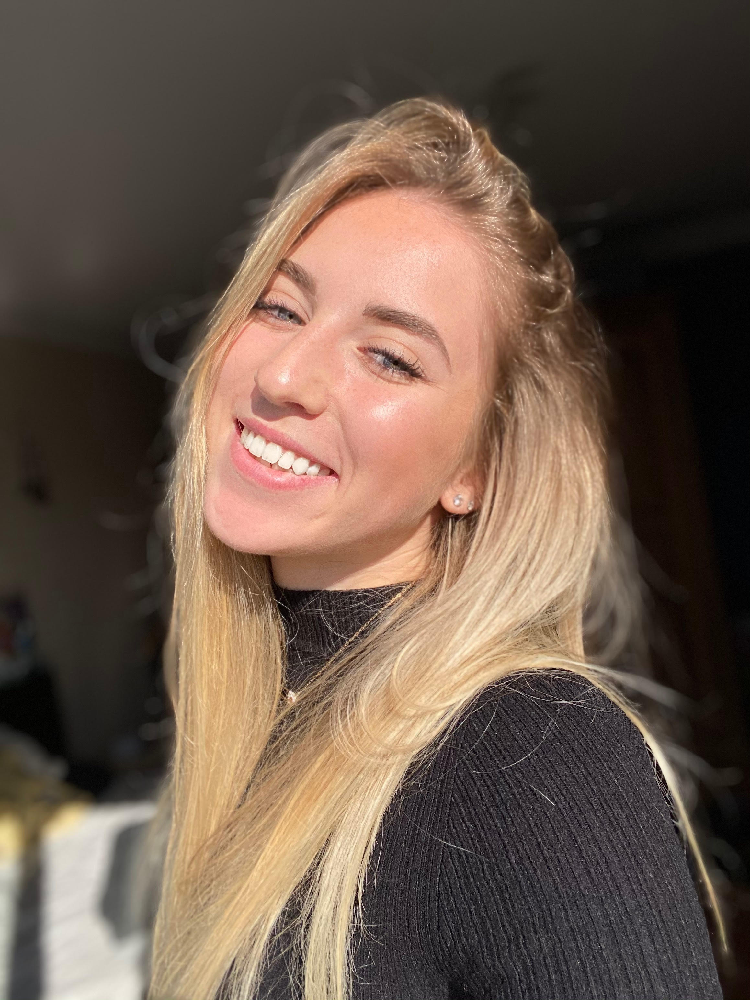
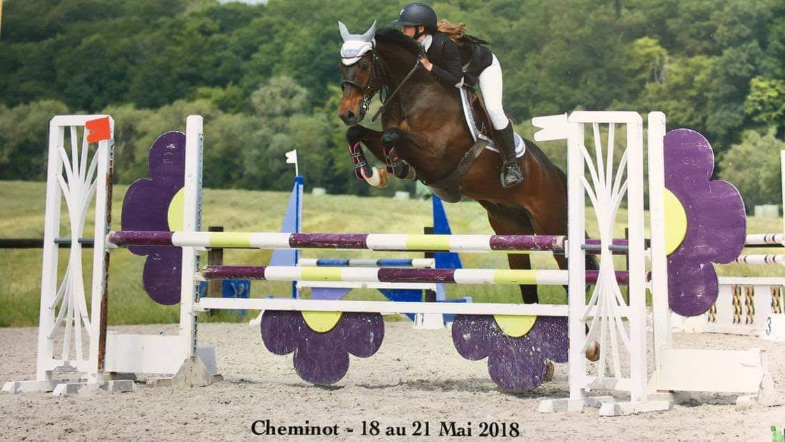
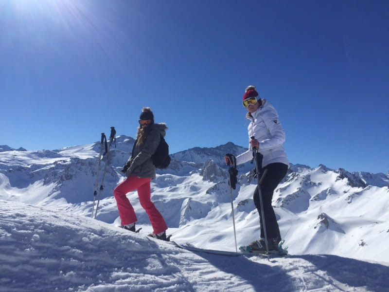
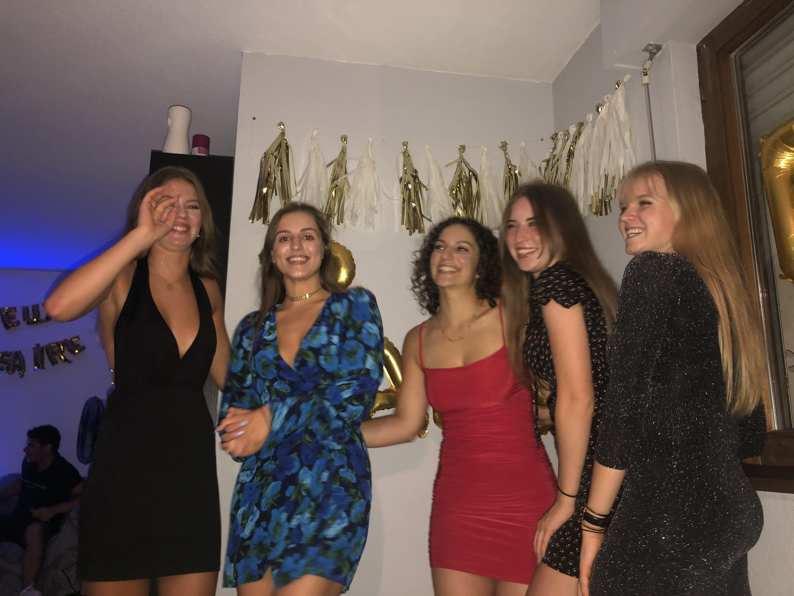

🌺 Bienvenue sur le profil d'Agathe 🌺
Bonjour à tous, je m'appelle Agathe Wolff. Pour me présenter en quelques ligens, je suis née et j'ai grandi dans un petit village d'Alsace du nord : La Walck 🏡. Après avoir obtenu mon Bac S, j'ai passé mon BTS Commerce International puis les concours Tremplin et passrelle pour enfin entrer à KEDGE sur le campus de Marseille 💙. Sur cette page, je vais vous présenter mes passions.
🐰 Les animaux 🐰

Une de mes premières passions, c'est les animaux. C'est vrai qu'on pourrait dire que j'ai un peu un mini ferme à la maison 😅 : 3 chats, un chien, 9 poules et un coq, 3 lapins, un âne et un cheval 🥰. J'ai toujours aimé les animaux et surtout m'en occuper.
🐴 L'équitation 🐴
Je pratique l'équitation depuis plus de 8 ans, c'est un sport qui petite m'a toujours attirée et lorsqu'à mes 12 ans j'ai enfin eu le droit de monter en club je n'ai plus jamais arreté. J'ai donc mon Galop 7 et jusqu'il y a 2 ans je faisais des concours niveaux amateur mais aussi 2 championnats de France dont 1 où j'ai fini 5ème de mon épreuve.
⛷️ Le ski ⛷️
En dehors des animaux ce que j'aime par dessu tout c'est le ski grâce à ma famille, fan de la montagne. Tous les ans je me rend donc à Tignes avec mes amies et ma famille au moins une semaine pour skier toute la journée et manger des bonnes raclettes.
👯♀️ Mes amies et ma famille 👯♀️
Jamais une semaine ne se passe dans ma vie sans voir ma famille et mes copines. C'est une des choses les plus importantes pour moi.
🏎️ Les voitures 🏎️
La dernière chose qui me passionne depuis petite c'est les voiture. Cette passion me vient de mon père, on en a passé des dimanches matin devant AutoMoto. Cette passion me motive encore plus a travailler dure pour pouvoir avoir les voitures de mes rèves.